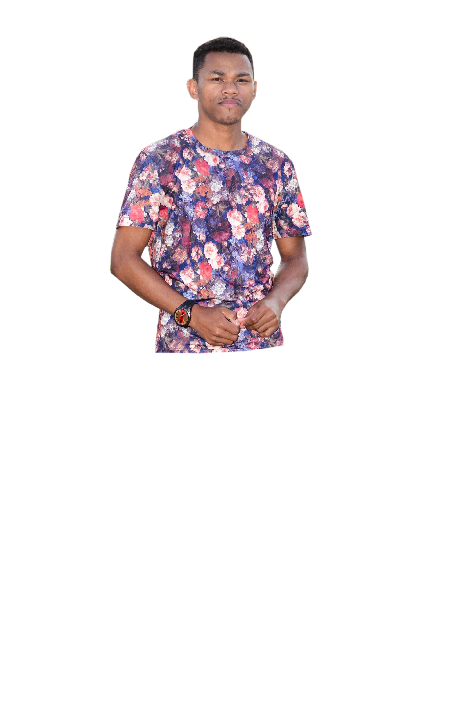
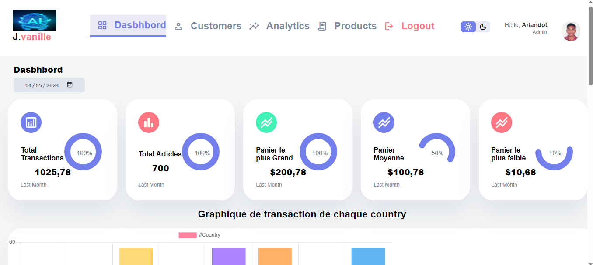
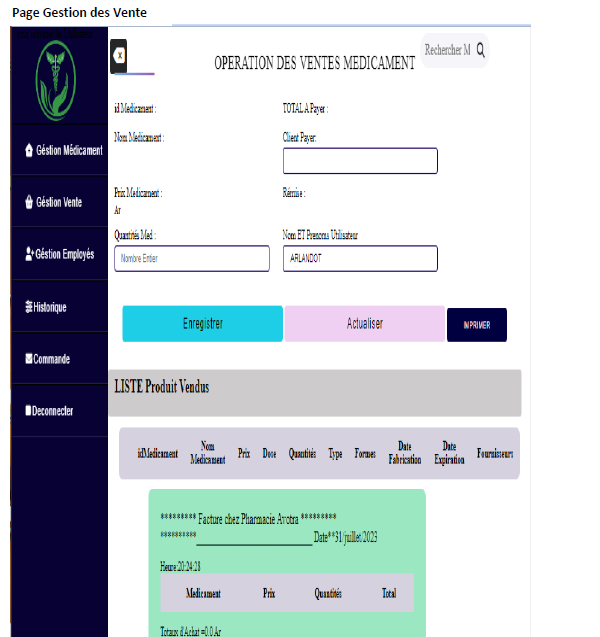

Développement web
Création d'interfaces et de fonctionnalités pour des applications web.
Portfolio · Madagascar
Développement web & analyse de données
Je conçois des interfaces web et j'explore les données pour rendre l'information plus claire et les outils plus utiles.

01 / Présentation
Je suis Jaonina Arlandot Ramanarintsoa, développeur web avec une formation en informatique à l'Université de Toamasina. Mon parcours associe la création d'applications, la programmation et l'analyse de données.
J'utilise notamment Java, Python et les technologies du web. Mes travaux présentés ici comprennent un tableau de bord de transactions et une interface de gestion des ventes en pharmacie.
Découvrir mon parcours02 / Savoir-faire
Des compétences techniques mobilisées pour concevoir, développer et comprendre.
Création d'interfaces et de fonctionnalités pour des applications web.
Manipulation, exploration et présentation de données avec Python.
Une approche structurée, nourrie par les mathématiques et l'enseignement.
03 / Réalisations
Deux aperçus issus du portfolio d'origine. Les captures s'ouvrent en grand format.

Tableau de bord · Capture d'écran
Une interface de visualisation présentant les transactions, les articles et des indicateurs de panier.
Voir la capture
Gestion · Capture d'écran
Une interface de saisie des ventes de médicaments avec liste des produits vendus et aperçu de facture.
Voir la capture04 / Parcours
Quelques étapes de mon parcours, d'après les informations déjà publiées sur ce site.
Université de Toamasina · Études en informatique et pratique de l'analyse de données avec Python.
Université de Toamasina · Parcours académique en informatique.
Association universitaire à Toamasina · Examen des comptes et préparation de rapports périodiques.
Enseignement de la physique-chimie et accompagnement des élèves.
Accueil, assistance informatique et gestion courante.
05 / Contact
Pour une collaboration, une question ou simplement pour échanger, écrivez-moi directement.